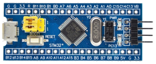
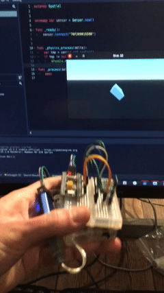

Me
C, Python, Scala
Functional Programming, Computer Graphics
Hobby: Rust, GLSL, J, Julia, OCaml
History
2010 Pet project by Graydon Hoare at Mozilla Research
2015 Hits 1.0
2016 Firefox Quantum
2018 Rust 👀 Me
Bullet points
- Strong static typing
- Type inference
- No GC
- No exceptions
- No
null's *
fn main() { let a = vec![1, 2, 3, 4, 5]; println!("{:?}", a); let sum: u32 = a.iter().sum(); println!("{}", sum); }
Ownership & Borrowing
T- owned value of typeT&T- reference to value of typeT
fn sum(a: &Vec<u32>) -> u32 { a.iter().sum() } fn add_one(a: Vec<u32>) -> Vec<u32> { a.into_iter().map(|e| e + 1).collect() } fn main() { let a = vec![1, 2, 3, 4, 5]; println!("{}", sum(&a)); println!("{:?}", add_one(a)); }
Mutation | Aliasing
&mut T- unique reference to value of typeT- many
&Tor one&mut Tat the same time
fn add_one_inplace(a: &mut Vec<u32>) { for e in a.iter_mut() { *e += 1; } } fn main() { let mut a = vec![1, 2, 3, 4, 5]; println!("{:?}", a); for _ in 0..3 { add_one_inplace(&mut a); } println!("{:?}", a); }
Structs & Impls
struct Point { x: f32, y: f32, } impl Point { fn distance(&self, other: &Point) -> f32 { ((self.x - other.x).powf(2.) + (self.y - other.y).powf(2.)).sqrt() } fn shift(&mut self, x: f32, y: f32) { self.x += x; self.y += y; } } fn main() { let origin = Point { x: 0., y: 0. }; let mut p1 = Point { x: 0., y: 2. }; println!("distance {}", origin.distance(&p1)); p1.shift(5., -2.); println!("distance {}", origin.distance(&p1)); }
Traits
- No inheritance
- Behavior described through traits
struct Point { x: f32, y: f32, } trait Show { fn show(&self) -> String; } impl Show for Point { fn show(&self) -> String { format!("{};{}", self.x, self.y) } } fn main() { let p = Point { x: 0.5, y: 1.3 }; println!("{}", p.show()); }
Example: Mutex
In imaginary game engine
class Posion:
def onTick(self):
self.entity.health -= 1
class Missile:
def onCollide(self, entity):
with entity.lock():
entity.health -= 1
In Rust Mutex owns its underlying data
#![allow(unused)] fn main() { use std::sync::Mutex; let entity: u32 = 0; let e = Mutex::new(entity); e.lock(); }
Source: RustConf 2021 Compile-Time Social Coordination 1
Algebraic Data Types & Pattern Matching
enum Option<T> { None, Some(T), } fn test(values: Option<&Vec<u32>>) { match values { Option::None => todo!("no values"), Option::Some(v) if v.len() > 3 => todo!("more than 3"), Option::Some(v) => todo!("{:?}", v), } } fn main() { let v = vec![1, 2, 3, 4]; test(Option::Some(&v)); }
Manual Memory
Types needs to have known size
#![allow(unused)] fn main() { struct List<T> { data: T, next: Box<List<T>>, } }
- Box is a heap pointer
- Box pointer is never
null - Box pointer gets deallocated when the handle goes out of scope
Other kinds of managed pointers 1
Manual Memory
#![allow(unused)] fn main() { struct List<T> { data: T, next: Option<Box<List<T>>>, } }
It gets worse
#![allow(unused)] fn main() { use std::rc::Rc; struct DoubleLinkedList<T> { data: T, next: Option<Rc<DoubleLinkedList<T>>>, // Rc is reference counting type previous: Option<Rc<DoubleLinkedList<T>>>, } }
Too Many Lists 1
Parameter polymorphism
Add guards to generic arguments to describe fine-grained behavior
trait Show { fn show(&self) -> String; } enum List<T> { Nil, Cons(T, Box<List<T>>), } impl<T: Show> Show for List<T> { fn show(&self) -> String { match self { List::Nil => "Nil".to_string(), List::Cons(t, l) => format!("{} -> {}", t.show(), l.show()) } } } impl<T: ToString> Show for T { fn show(&self) -> String { self.to_string() } } fn main() { let l = List::Cons(10, Box::new(List::Cons(5, Box::new(List::Nil)))); println!("{}", l.show()); }
For dynamic dispatch see also chapter on trait objects 1
stm32
Blue Pill: stm32f103c8t6
- ARM Cortex-M3
- 32 bit, 1-core
- 72 Mhz clock
- 64 KB FLASH
- 20 KB RAM
Demos: stm32
 Libraries & Tools
WebAssembly
- Binary executable format & VM
- Supported by all major browsers
- Linear memory
Rust
Demos: WASM
Simplex Noise Procedural Generation
Notable features
Most references from The Rust Book
- Ownership & Borrowing
- Algebraic Data Types
- Parametric polymorphism
- Pattern matching
- Hygenic macros
- Async programming*
How to get started
Check out the book on WebAssebmly
Some community resources
Projects
- Desktop (Servo, Tauri Apps)
- Embedded (HAL, stm32),
no_std1 - Services, backend (Tokio)
- Graphics/Games (Bevy, godot-rust, Embark Open-Source projects)
- Frontend (WebAssembly) (EGUI, Seed, Yew)
- Blockchain (Solana)